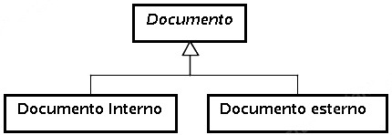
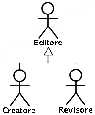

Workflow
Code
Report
Workers

|
TERMINE |
SINONIMI |
STEREOTIPO |
SIGNIFICATO |
|---|---|---|---|
| Collegamento | Entità (associativa fra documenti |
Rappresenta una associazione fra due documenti e viene creata all'atto del collegamento di documenti . |
|
| Collegamento di documenti | Processo utente |
Azione mediante la quale un editore crea una nuova relazione fra due documenti , rendendo in tal modo i due documenti collegati fra loro. La relazione che si crea all'atto del collegamento di documenti è detta collegamento. |
|
| Controllo | Processo utente |
Azione di verifica intrapresa dall' editore a seguito di una importazione . Il controllo consiste nel visualizzare il documento appena importato, al fine di verificare l'assenza di errori durante il processo di conversione intrapreso dal sistema. Nel caso in cui il controllo faccia emergere differenze fra il documento esterno importato e il relativo documento interno , l' editore può intraprendere un'azione correttiva manuale mediante la modifica del documento . |
|
| Conversione | Processo sistema |
Funzionalità del sistema che deve intervenire contestualmente all' importazione di documenti esterni, che consiste nella traduzione del documento dal formato esterno al formato interno, al fine di una sua gestione nel sistema. |
|
| Creatore | Attore (specializza Editore ) |
Si definisce creatore di un determinato documento , l' editore che lo ha creato . |
|
| CT | Attore |
Custorer Ticket. |
|
| Data di creazione | Proprietà del documento |
La data nella quale il documento è stato creato . Viene determinata in modo automatico dal sistema all'atto della creazione di un nuovo documento . Non può cambiare nel corso della vita del documento . |
|
| Data di revisione | Data di modifica | Proprietà del documento |
La data nella quale il documento ha subito le ultime modifiche. Riflette un istante di tempo in cui si è verificato un evento replicabile (la modifica del documento ) e può pertanto cambiare di valore nel corso della vita del documento , a differenza della data di creazione . |
| Data di scadenza | Proprietà del documento |
La data oltre la quale il documento deve subire una revisione da parte di un editore . Riflette una soglia cronologica oltra le quale il documento viene considerato obsoleto e richiede pertanto l'intervento di un editore per una sua revisione . |
|
| Documenti collegati | Relazione (fra documenti ) |
Due documenti sono collegati se contengono informazioni semanticamente analoghe. La relazione di collegamento fra due documenti viene stabilita da un editore mediante una azione di collegamento . |
|
| Documento | Entità |
Informazione testuale in formato elettronico destinata all'utente. Si possono classificare i documenti in base alla loro posizione rispetto al sistema:

In seguito, si farà riferimento al termine documento (senza aggettivo), sottintendendo sempre il termine documento interno . Qualora si faccia riferimento propriamente a documenti esterni, l'aggettivo qualificativo esterno sarà sempre indicato. |
|
| Documento esterno | Entità |
Documento non gestito dal sistema e prodotto al di fuori di esso. E' prevista la possibilità, mediante il processo di importazione , di mappare un documento esterno nel sistema, creandone in questo modo una sua rappresentazione interna al sistema, sottoforma di documento interno . |
|
| Documento [interno] | Entità |
Documento gestito dal sistema. Un documento [interno] può essere catalogato in base ai contenuti che riporta, al processo a cui è associato, alla propria tipologia. CaratteristicheOgni documento [interno] , in quanto gestito dal sistema, gode delle seguenti proprietà:
|
|
| Edit inline | Processo utente |
Funzionalità del sistema che realizza una parte delle funzionalità amministrative , permettendo agli editori di inserire e modificare i documenti nel sistema. |
|
| Editore | Persona di Kion , Redattore , Operatore | Attore |
Persona fisica con responsabilità amministrative sulla gestione dei documenti . In rapporto alle operazioni eseguite sul singolo documento, un redattore può definirsi, nell'ambito di quello specifico documento :

|
| Gestione di documenti | Processo |
Insieme di funzionalità messe a disposizione dal sistema al fine di permettere:
|
|
| Importazione | upload del documento (esterno) | Processo |
Funzionalità del sistema che realizza una parte delle
funzionalità amministrative
, permettendo agli
editori
di
importare
documenti esterni
. |
| Knowledge base | Entità |
Insieme di documenti e di classificazioni gestiti dal sistema. |
|
| KIM | Attore |
KION Internal Management. |
|
| Fruitore | Utente | Attore |
Persona fisica o sistema informatico con responsabilità di consultazione sulla gestione dei documenti . |
| [Documento] obsoleto | Stato del documento |
Un documento è obsoleto nel momento in cui la propria data di scadenza è antecedente alla data odierna (relativamente al periodo temporale di consultazione del documento ). Un documento obsoleto può abbandonare tale stato nel momento in cui interviene una revisione dello stesso che ne modifica la data di scadenza . |
|
| Processo | Entità |
. |
|
| Revisione | Processo utente |
Azione relativa ad uno specifico documento , che consiste nella modifica dello stesso, in una fase successiva alla sua creazione . |
|
| Revisore | Attore (specializza Editore ) |
Si definisce revisore di un determinato documento , l' editore che ha compiuto l'ultima revisione , in ordine temporale, dello stesso. |
|
| Tag | Entità |
Metainformazione associata a zero o più documenti che definisce il contesto semantico di un documento. Strutturalemente è testo semplice, di lunghezza limitata (al limite una sola parola) ed è utilizzato come criterio di indicizzazione dei documenti. Un documento è classificato mediante l'associazione del medesimo a uno o più tag. |